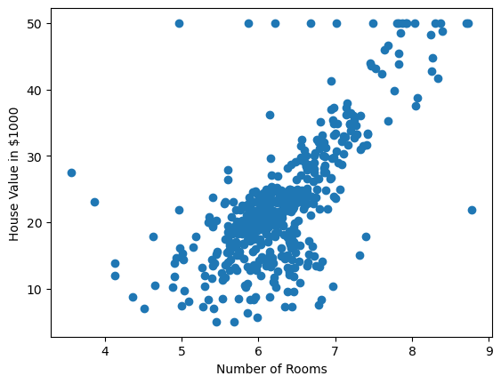
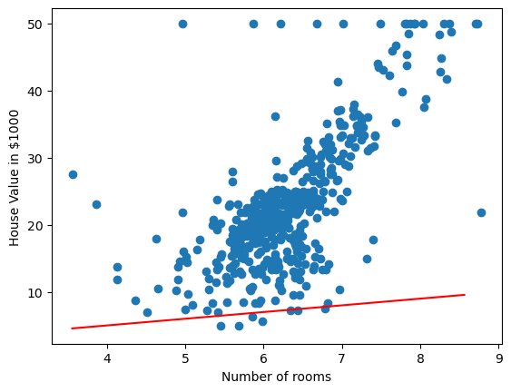

Machine Learning
Lecture 2 - Linear Models
Linear Regression
Introduction to linear models
Linear models
Having learnt a little about what it means to learn, we're going to look at our first Machine Learning algorithm, the staple for much of statistics, numeric prediction using a linear model.
What is a linear model?
A linear model is a prediction (a response) to an input variable. We have the following terms:
- Response/prediction – the output of the model.
- Dependant variable – the variable upon which the prediction is being made.
For a linear model based on one dependant we have the following:
\[ y = w x + b \]
where \(y\) is the response/output/prediction of the model, \(x\) is the dependant variable, and \(w, b\) are the model parameters.
If we look at our linear model equation, we'll notice that it's the same equation for a straight line.

Supporting example
Let's have a look at how we would use this linear model with one of the datasets: The Boston housing prices.

Figure 1: Scatter plot of the number of rooms in a house against the house valuation. In this plot we can see a positive effect with some outliers to this trend.
Let's fit a linear model
We have seen that there seems to be some correlation between the number of rooms and the house price. I.e. we can use the number of rooms of the house to get the estimated price. To get an estimated price we'll use our linear model:
\[ y = w x + b \]
In this case, \(x\) will be the number of rooms. But what values should we set for \(w\) and \(b\)? Or put another way, what is optimal value for our model parameters.
We'll return to the question of optimal later, but for now, let's just select some random values!
\[ w = 1 \] \[ b = 1 \]

Figure 2: A linear model line overlayed onto the boston house prices dataset. Blue circles represent samples from the dataset, while the trend line is shown in red.
Well that doesn't look very good, it could be 'fit' better to what we're seeing in the scatter plot! I wonder how wrong the linear model is – how incorrect our predicted house prices are?
Evaluating our initial linear model
To evaluate how well, or in this case, how badly our linear model is doing, let's compare the predicted value from the model against the actual house price. For example, we'll take a single sample from our dataset.
If we have 4 rooms, our model estimates the house price to be \(2(4) + 5 = 13\), $13,000, but the actual cost was $24,000. This means we have underestimated the cost by $11,000.
What we've done there is the following:
\[ \delta = | y - \hat{y} | \]
where \(\hat{y}\) is \(w x + b\)
We've calculated the difference or delta between the real house price \(y\) and the predicted house price.
That gives us the error for one sample though, what about for the whole dataset? Well we could take the mean over all samples:
\[ \Delta = \sum_{i=0}^n | y - \hat{y} | \]
If we calculate that our linear model we see that the average difference between our estimated value and real value is $15,000!
Getting better model parameters
Okay, so we made our initial guess at the model parameters (random values for \(w, b\)), and these weren't very good. We were incorrectly guessing the house value by $15,000. So how do we get better values?
Well if we visualise how badly we do vs the value for \(w\) we get the following:

Figure 3: Mean absolute error (MAE) between the true and predicted house values when varying the value for \(w\) parameter in the linear model.
In figure 3, we see that as we change the \(w\) parameter, the mean absolute error (MAE), i.e. the average difference between the predicted house prices and the true house prices, changes. Ideally, we would like the error or loss to be as low as possible. In this case, when \(b = 1\) the lowest possible loss we can hope to achieve with the linear model is ~ $5,500.
But what value for \(w\) gets us this lowest value for the loss? Looking at the graph, we see that the lowest point on the loss curve is somewhere between 0 and 5. Maybe even 4? While we could look at the curve and pick these parameter values, we're going to use a better method – one that give us an optimal value for this loss curve automatically.
We're going to look at the method called Gradient Descent.
If we visualise our loss curve again, and visualise where \(w = 1\) is on this curve, we will see:

So we want this rot dot to move down the loss curve and reach the bottom of the curve. Using the Gradient Descent algorithm, we're going to take very small steps down the loss curve.
To determine which way is up, and which way is down the curve, we use the Gradient of the curve (hence Gradient Descent). We compute the gradient using:
\[ \Delta = \frac{f(x) - f(x+h)}{x - (x+h)} \]
where \(f(x)\) is the loss when \(w\) takes on the value of \(x\). \(h\) is a very small value.

If we select \(h = 0.5\) then we will have the formula:
\[ \Delta_w = \frac{\mathcal{L}(w) - \mathcal{L}(w + 0.5)}{w - (w + 0.5)} \]
where \(\mathcal{L}\) represents our loss function, MAE. If we calculate this we have:
\begin{aligned} \Delta_w &= \frac{\mathcal{L}(w) - \mathcal{L}(w + 0.5)}{w - (w + h)} \\ &= \frac{\mathcal{L}(1) - \mathcal{L}(1.5)}{1 - (1 + 0.5)} \\ &= \frac{15 - 12}{-0.5} \\ &= -6.0 \end{aligned}Given that the gradient is a negative number, we know that the curve is going down/decreasing. So we will want to move \(w\) in this direction – we want to move \(w\) so that the loss decreases.
\[ \overline{w} = w - \eta \Delta_w \]
Our new value for the \(w\) parameter (\(\overline{w}\)) is computed by taking its original value and subtracting the gradient modulated/multiplied by \(\eta\). \(\eta\) in this case is what will allow us to take our small steps.
How to select the best weights
- Lowest point on the curve.
Automatically computing the best weights
- Gradient descent
Logistic Regression
Classification
Moving from regression to classification
We now turn to classification